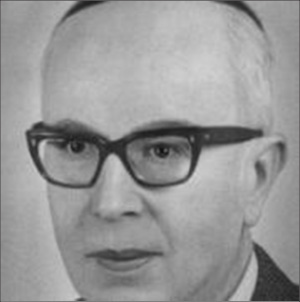

Why the Rebbe Opposed Uniforms in the Chabad School in Melbourne
From the life of R’ Yehoshua Shneur Zalman Serebryanski a”h

SCHOOL UNIFORMSWHY THE REBBE OPPOSED UNIFORMS IN THE CHABAD SCHOOL IN MELBOURNE From the life of R’ Yehoshua Shneur Zalman Serebryanski a”h Prepared for publication by Avrohom Rainitz SCHOOL UNIFORMS In earlier chapters our series described how R’ Mordechai Rich, the askan, one of the heads of the Mizrachi movement in Melbourne, became very close to Chabad. He even sent his two children to the Chabad school. He had yechidus with the Rebbe and received encouraging letters from him. His connection to the yeshiva grew, and he became one of the friends and supporters of the yeshiva. R’ Mordechai took great pleasure in the Chabad school’s success and suggested to R’ Zalman that they institute a school uniform including a cap with the yeshiva’s name embroidered on it. R’ Zalman, who did not make a significant step in the running of the yeshiva without consulting the Rebbe, wrote to the Rebbe about this. He asked whether there was a school uniform in American Chabad schools and whether he could get a sample. In the Rebbe’s reply, dated 11 Nissan 5715, the Rebbe dismissed the idea, fearing that a uniform would not satisfy everyone and would even prevent a few people from joining the school. In addition, the Rebbe alluded to another fear, that if there would be a uniform “there would be a question regarding certain matters that are impossible to accept and this would lead to a falling out.” R’ Zalman understood that the Rebbe meant that some of the supporters of the school, who belonged to the Mizrachi movement, might want the uniform to be blue and white like the Israeli flag. This would not be acceptable, which is why it was preferable not to get into the matter altogether. So that Mr. Rich should not experience any unpleasant feelings about his idea being rejected, the Rebbe suggested that he be told that uniforms had not been instituted in Chabad schools and the school in Australia should not be different than the schools elsewhere in the world. In the Rebbe’s words: Regarding the suggestion about a uniform: I see no purpose in it. In our schools in Eretz Yisroel, France etc. they don’t have it … In our schools there is no such thing and there never was. HOW TO EXPLAIN NOT PARTICIPATING IN INDEPENDENCE DAY FESTIVITIES In the same letter, the Rebbe referred to an idea that someone in Melbourne proposed regarding the school participating in a 5th of Iyar celebration (Israel Independence Day). In R’ Zalman’s letter to the Rebbe, there is no mention of this idea which was completely out of the question as far as he was concerned. Apparently, one of the other askanim wrote about it to the Rebbe. Here too, the Rebbe’s approach is interesting. He did not get into a debate about it, but simply explained that the point of a school is solely to be involved in chinuch al taharas ha’kodesh, and anything that might keep even one boy or girl away from the school was unacceptable. Since there were differing opinions about Hei Iyar, the school could not take a stand on it: Regarding participating in a Hei Iyar celebration, I recently received a letter from Eretz Yisroel which says that a number of schools there, even from Mizrachi, do not participate in this for a number of reasons. All the more so in your country; you should not get involved in anything to do with parties. In response to this, R’ Zalman wrote to the Rebbe on 7 Iyar saying he was grateful that he had thought along the same lines as the Rebbe. “May Hashem give me the merit with His great mercy to understand the Rebbe’s wishes in truth and to be truly connected to the Rebbe, and to find time to learn Nigleh and Chassidus, and for avoda p’nimis.” BE WARY OF ANYTHING THAT CAN BE INTERPRETED AS PARTISANSHIP A short while later, the Rebbe wrote a letter to Mr. Rich in which he first said how pleased he was to read about the successful Chanukas HaBayis of the yeshiva. Then he wrote that all those involved with the yeshiva need to be careful to avoid anything that can be interpreted as partisanship, even if it met the approval of some of them. The Rebbe says this was always the key to the success that Lubavitch had in all countries and in various time periods, i.e. doing the work in a completely non-partisan manner. Nobody should be able to say that the yeshiva belongs to one party more than another. A copy of the Rebbe’s letter to Mr. Rich was sent to R’ Zalman. When Mr. Rich received the letter, he happily called R’ Zalman to report about it. R’ Zalman took the opportunity to tell him that he asked the Rebbe about uniforms and the Rebbe did not want it. To R’ Zalman’s surprise, Mr. Rich understood and did not try to bring the topic up again. That same day, 7 Iyar, R’ Zalman reported to the Rebbe and wrote that he thought it was worth urging Mr. Rich to be more involved with the Chabad school. Mr. Rich was generally very pleased with the Chabad school which his two sons attended. This was especially so when he saw the high academic level. His five year old son had learned to read in three months and would soon be learning Chumash. He knew that in the Mizrachi school it took at least another year until the children learned to read well. He was very impressed by R’ Zalman’s ability to teach reading to children. Mr. Rich donated more of his time to the school, but in R’ Zalman’s opinion, he could have been doing a lot more. Instead he was devoting his time to other things like the Talmud Torah of the shul he davened in (the Elwood Talmud Torah). “This is what weakens his work for the yeshiva,” wrote R’ Zalman to the Rebbe, “because he does not want, or perhaps he also cannot, due to his nature, focus on one thing as the main thing.” R’ Zalman said the same applied to other askanim who were on the yeshiva’s vaad; each of them had other projects they were involved with aside from the yeshiva. “We have not been able to find people who are exclusively devoted to the yeshiva.” In an interesting analysis of the world of askanus, R’ Zalman wrote to the Rebbe that in the early years of the school’s founding, this was actually an advantage since as half, third, or quarter part-time askanim they were unable to say how the mosad should be run. Even if they expressed an opinion that was not in accordance with the Rebbe’s wishes, it was easy to dismiss it. R’ Zalman concluded that once the school had gained a solid footing with a Chabad curriculum and no outside influences, “Now whoever joins us will come to help a school that already has a form and plan and he will know what’s what and not express a view that is unacceptable to a school like this. Therefore, it is certainly possible to utilize the help of askanim without fear and may Hashem help us with this.” In response to this letter, the Rebbe wrote in a letter dated 14 Iyar that based on what he knew of Mr. Rich, that he loved when his view was accepted and he did not always accept other views, it was preferable that he be involved in other askanus, aside from Chabad, as well. When able to exert his opinion in other mosdos, it would not bother him to help Chabad despite his views not always being accepted. NOT TO COVER UP THE CHABAD NAME IN THE NEWSPAPERS The Rebbe also referred to some newspaper clippings that he received from Mr. Rich about the Chanukas HaBayis: When I read these newspaper clippings about the Chanukas Beis Yeshivas Oholei Yosef Yitzchok and newspaper clippings on other occasions, I see that the name of Lubavitch is omitted. Since this has happened a number of times already, it is surely not due to a lack of attention on the part of the reporter and editor; on the contrary, it is deliberate. Although obviously the name [Lubavitch] should not be mentioned excessively so that an impression will not be made that they want to make everyone shpitz Chabad, there is no need to go to the other extreme either. A middle way can surely be found. With blessing for success in your holy work on the part of the Admur shlita, A Quint, secretary R’ Zalman responded in a long letter that he wrote Erev Shabbos 28 Sivan. He said that to the best of his knowledge there was no animosity on the part of any editor. The entire topic of emphasizing the name of Lubavitch along with their work was debated by the Lubavitchers of Melbourne. Since the Chassidic community consisted of barely ten families and most of the work was done not for Chabad Chassidim but for the broader Jewish community, some of them thought that the name Lubavitch should not be in the forefront, and when reporting to the newspapers only the work in general on behalf of the Jewish community should be related. In order to depict what the k’hilla was like in those days: about three hundred men attended shul on Friday night, but only twenty of them were Lubavitchers. As mentioned in earlier chapters, the chazan would wait silently before the Shmoneh Esrei so the congregation would have time to say “v’shomru.” The chazan was Chabad and did not say “v’shomru,” but he could not start right after Kaddish since 90% of the people said “v’shomru.” R’ Zalman’s own view was that they should mention the name of Lubavitch in connection with their activities, but without calling attention to it, disregarding concerns about those who opposed Chabad. There were other Chabad askanim who thought otherwise and this is apparent in the reports that were written in the newspapers. Once the Rebbe said his opinion on the matter, R’ Zalman wrote, “Now, thank G-d, all the arguments were silenced, and may Hashem evoke that the yeshiva’s good name be aggrandized for success, with Hashem’s help.”
Beis Moshiach (staff). "Why the Rebbe Opposed Uniforms in the Chabad School in Melbourne." Beis Moshiach, no. 916 (February 19, 2014).